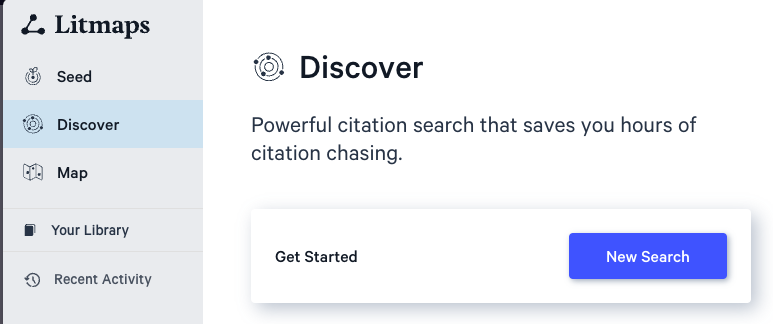

Unit 2 Discovering and Curating Resources
Overview
In this module, we’ll dive into three important aspects of utilizing digital resources effectively. Firstly, we’ll explore the art of discovering and selecting valuable resources for your academic and professional needs. You’ll learn how to search efficiently, critically assess sources for credibility and relevance, and fine-tune your search techniques.
Next, we’ll delve into the world of citation management. Properly citing your sources is vital in academic writing to avoid plagiarism, and we’ll introduce you to various citation styles like APA, MLA, and Chicago. You’ll also gain practical experience with citation management tools to help streamline the citation process and manage your references efficiently.
Finally, we’ll discuss the concept of openness in education. We’ll explore open educational resources (OER), the benefits and challenges of open access, and the role of Creative Commons licenses in educational materials. This discussion will open your eyes to the changing landscape of educational resources and the ethics surrounding them. Throughout these topics, you’ll engage in hands-on activities, group projects, and discussions to enhance your critical thinking skills and promote responsible use of digital resources.
Topics
This unit is divided into the following topics:
- Finding & Selecting Resources
- Citation Management
- Openness in Education
Learning Outcomes
When you have completed this unit, you should have made progress toward the following course outcomes:
- Build and customize technology-integrated workflows to enhance and enrich your learning journey
- Apply digital literacy skills to evaluate the legitimacy, credibility and reliability of online resources for academic study.
- Evaluate digital tools, platforms, and interactions based on ethical principles
Activity Checklist
Here is a checklist of learning activities you will benefit from in completing this unit. You may find it useful for planning your work.
Learning Activities
- Explore Litmaps to find articles of interest.
- Visit the TWU Library and view the libguides.
- Download and Install Zotero
Note: The learning activities in this course are designed to prepare you for the graded assigments in this course. You are strongly encouraged to complete them.
Assessment
- See the Assessment section in Moodle for assignment details and due dates.
2.1 Finding and Selecting Resources
Throughout your university career, you will encounter tasks in your courses that will require you to produce some original writing. It is very important that you give yourself more time than you think you might need to complete these tasks. Good writing in university doesn’t just happen. It takes work. You will find that a large amount of that work isn’t actuaally writing at all, but reading. Then writing, and reading some more. Then re-writing, revising, editing, reading some more, and editing again.
One of the most important tasks in all that, is finding the resources you need to read, making sure they are academic resources, copying down all the information about the resource, then making sure you can keep track of what you have found, read, and learned. This unit will help you build a workflow for doing just that. You need a workflow and a system, because there is far too much information available to you than you will ever be able to digest and read, let alone remember. It is impossible to memorize everything you need to know, so you need a way to manage your knowledge and resources.
In the previous unit, we introduced you to Obsidian, and you are going to continue to use Obsidian in this unit, but we will add some awareness of features that will take you along the path of becoming a workflow wizard. We will also introduce two new tools, Litmaps and Zotero, along with a couple of Zotero plugins that help extend the capabilities of the software. We will also integrate some knowledge of how to use the library to assist.
We recognize that we are introducing several tools to you, and that may feel overwhelming, however, there are no tools that do everything that you need to do, and if a tool claims to be able to do everything, it likely does only a few things well, and the rest is poorly implemented.
Finding Resources
Litmaps is a web app that you can use to build a map of the literature regarding your topic. For now, presume that you need to write a paper on transformational servant leadership. That is a very broad topic, and you are only beginning to learn about it, so you need to start by doing some reading…but what should you read? Your instructor might have given you an article to read, or there are likely some good articles published on your course syllabus, but you might also have to start on your own. Here is how.
Find a Literature Review
When academics begin writing a research paper, they always start by reviewing what is already known about a subject, in this case, transformational servant leadership. This is called a literature review, and you can often find a section called “Literature Review” at the beginning of every article you read. Sometimes, though, the whole research article will be a literature review. Reviewing the literature in this way is sometimes called a systematic review, or maybe a scoping review. These approaches to lit reviews have different foci, but the intent is to publish an article that follows very specific procedures so that other researchers or learners can confirm the process. These types of reviews are very useful in getting started in a new topic.
One of the quickest ways to get started on a search is to use Google Scholar (scholar.google.com), but Google Scholar has some problems in that it will return a huge number of results. Notice that the image below shows over 91,000 results. Far too many for you to sort through.

The top result, shows some promise though. Notice a few things about it.
- it has all your key words right in the title - that’s good
- it has over 2700 citations (that’s very good)
- it was published in 2004 (that’s not great…it’s old)
One of the easiest ways to find literature reviews in Google searches is to include ‘literature review’ in your search. When we do that, we get a better list. This time, there are more results (97,000), but they are better results. Notice the third item…

- all your keywords
- lots of citations
- much more recent (2019)
- AND it is a systematic review
This is the only article you need for now. Click the link.

In fact, you don’t even need to read this article yet. All you need is the DOI - the Digital Object Identifier. A DOI is a critical piece of information about an article that provides a piece of evidence that this is a legitimate article published in a legitimate journal. A DOI will always start with 10.. Sometimes, it is included as part of a URL, like in this case, but you only need the code that follows ‘10.’. The DOI for this article is 10.1016/j.leaqua.2018.07.004
Copy the DOI. Sometimes you need to copy the whole URL, and that is ok.
Log in to Litmaps.com
Paste the DOI.

You will notice that LitMaps will be able to find the article and will present it as an option for you to click. Go ahead…click.
LitMaps will create what they call a Seed Map, which you can see in the image below.

The seed map shows an AI-generated map of the 20 most relevant articles related to the seed article. Each dot represents an article. The seed article is shown as a dot with a little sprout in the middle. The size of the dot is related to how many references are in the article (smaller dot = fewer references). Dots near the top of the map have more citations, and dots near the right side of the map are more recent. The map will always look like a bit of a waterfall as older articles tend to have more citations. This map can be very helpful in finding very impactful, recent articles as those articles will be in the top right quadrant of the map.
When you are signed in to LitMaps, you are able to create ‘Collections’ of articles. To do this, click on an article in the seed map, then read through the abstract. This might tell you that the article is not related to your search, but if it is, as in the image, then click ‘Edit Collections’ then ‘New Collection’. Give the new collection a name, and click ‘Done’.

Next, add Hoch, 2018 to your new collection (it is closest to the upper right quadrant), and finally add Greenleaf, 1979 (all the articles seem to cite this article, so it is likely very important in the field, sometimes called a ‘seminal article’).
Notice that the articles you added to your new collection are all coloured the same as the collection.

Next, click ‘Discover’ in the left-hand menu bar, then click ‘New Search’, then ‘Add from your Library’.


Make sure you are in the correct Collection, and click ‘Add 3 Inputs’.

Click ‘Find Related Articles’.

This will result in a new set of articles that are related to all three of your initial input articles. As you add more inputs, you will get a more refined result list until you have a nicely curated list of related articles.

To add an input article, click on it in the map or list and choose ‘Add to Search’, then ‘Expand search’ to execute a new search with the new articles you added.


Notice that this search turned up another impactful article. Make sure to add that to your list!

Click ‘Your Library’ and choose the library you just created. There should be 8 or so references in the library. This is likely enough to synthesize into a short paper, but some disciplines may require more. Select all of the items in the library by clicking the checkbox that says ‘0 Selected’. Then click the ‘Export’ icon on the right side of the screen.

Choose ‘RIS’ in the dropdown, then click ‘Download’.

Activity: The TWU Library
Some of your best advocates on campus or online are the librarians who work at the Norma Marion Alloway Library in Langley. They are extremely knowledgable about finding things that are hard to find, so it is ALWAYS a good idea to talk to a librarian about what you are trying to do. They are literally paid to help you succeed! One of the ways they like to help is by creating what is known as a ‘LibGuide’, and I encourage you to access their LibGuide on using the search feature on the library website..
2.2 Citation Management
Now that you have a handful of references to keep track of, it’s time to get started with Zotero to help you manage your references. I promise that learning to use a reference manager like Zotero will save you MANY hours per semester, and likely days or weeks over the course of your degree. Do Future You a huge favour and get in this habit now.
Download and Install Zotero
The RIS file you exported from LitMaps isn’t going to be very useful unless you have software that can read it properly. Your best option is Zotero as it is free and open source and has a good number of plugins and integrations you can use to connect with other apps.
Go to zotero.org and click the red ‘Download’ button. Then follow the instructions to install Zotero on your computer. If you want to sign up for free storage (300MB) and backup for your library, you can also do that here.
Once you have installed Zotero, there are some plugins that will help you in your studies. These are listed below with links to instructions on how to install and configure the plugin.
- Zotfile - allows you to find and manage PDFs in your Zotero library
- Citation Counts Manager - automatically update citation counts for items in your library
- scite.ai - provides a breakdown of how references are cited in the literature
Now that you have Zotero ready to go, it’s time to import your first references. Find the ‘untitled.ris’ file in your downloads folder and double-click it to open. You might have to confirm that you want to open with Zotero.
Zotero and the Library
LitMaps is not the only way that you can connect to Zotero. You can also export items directly from a search in the library databases.
Go to twu.ca/library and search for ‘transformational servant leadership’. On the results page, you might notice that you are prompted to sign in to see certain items. There is a yellow banner at the top of the page with a link to login.
Click on the top item in the list of results

Then click on the ‘Export’ button on the right side. Then choose ‘Direct Export in RIS Format’, then ‘Save’


You might get a message to install the Zotero Connector in your browser, go ahead and do that. Once you have imported the reference, you will have a brand new item in your Zotero library!
From here on to the day you graduate with your BA, then your MA, and finally your PhD, Zotero will be with you and you may find yourself using it every day. I (Colin) am finishing my PhD, and Zotero is ALWAYS open on my computer. It is absolutely indispensible.
2.3 Openness in Education
We would like to introduce you to a value win education that we believe is important for creating a true community of inquiry in higher education. If you haven’t already noticed from the title of this topic, we are thinking about openness. Here is a quick overview from the OER Foundation.
Open Access Explained from OER Foundation on Vimeo.
And here is an article you can read (for free) from the British organization Wonkhe.
Summary
In this unit, you have had the opportunity to develop crucial skills for navigating the digital resource landscape. You are now able to effectively find and evaluate resources, manage citations, and understand the importance of openness in education. These skills will enhance your ability to use digital resources for academic and professional growth responsibly and effectively.
Checking your Learning
Before you move on to the next unit, check that you are able to:
- Describe your engagement with digital technology
- Apply digital tools to support learning in an academic environment
- Explain what digital literacies mean for you in a tertiary education context
- Examine your digital footprint
- Build your professional online biography
- Examine privacy concerns related to various platforms and tools
- Describe how to protect yourself, other students and colleagues, to stay safe in the digital environment.